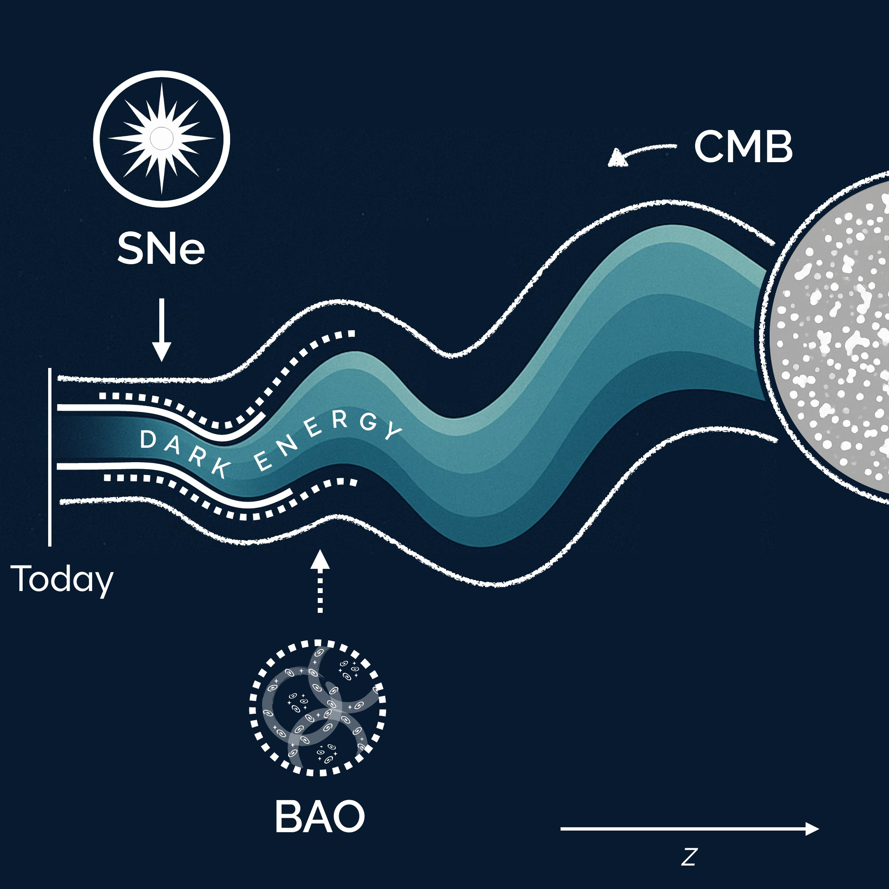
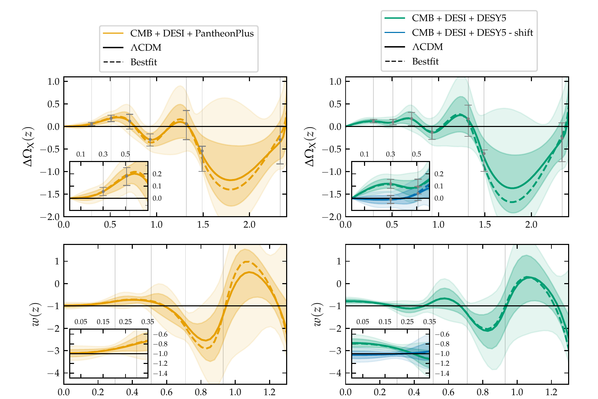
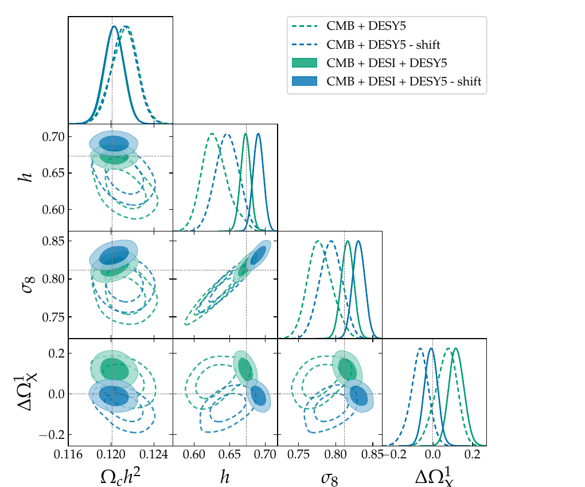

Is dark energy changing? Letting the data decide

Is dark energy changing? Letting the data decide
A non-parametric Bayesian reconstruction of how the dark energy density evolves over cosmic time, fitted to the latest DESI baryon acoustic oscillation measurements. The method avoids assuming a functional form and lets the data decide.
The problem
Since the accelerated expansion of the Universe was discovered in 1998, the standard model of cosmology has assumed that dark energy is a constant. In 2024 the DESI survey published new measurements that hinted otherwise, and the question became one of the most debated in the field.
Most analyses test this by choosing a specific formula for how dark energy could change, and fitting its parameters. The answer then depends on the formula. I wanted an approach closer to how a data scientist would treat an unknown function: let the data determine the shape, and measure how confident we can be in every part of it.
What I built
A flexible, non-parametric model. I described the dark energy density as a smooth curve defined by a small number of control points (a cubic spline). The value at each control point is a free parameter learned from the data. I chose to model the quantity that the measurements are most directly sensitive to, which made the model both easier to constrain and easier to interpret.
Data fusion across heterogeneous sources. I combined three very different datasets in a single likelihood: the cosmic microwave background (the early Universe), distance measurements from DESI galaxy clustering, and two independent catalogues of supernovae. I wrote the likelihood for the DESI data and integrated everything into an existing scientific modelling pipeline.
Bayesian inference at scale. The full model has 14 parameters with strong correlations between them. I explored the posterior with an ensemble MCMC sampler, and cross-checked it with a second, independent algorithm (Metropolis–Hastings) plus a direct optimiser for the best fit. Every result comes with a full uncertainty band, not just a point estimate.
Validation and robustness. Before trusting the results, I checked the new pipeline against an independent, widely used code and recovered consistent answers. I then stress-tested the conclusions in two ways:
- Overfitting: a flexible model can fit noise. I compared an 8-point and a 4-point version of the model. The simpler one gave smoother curves with the same overall features, which tells us the signal is not an artefact of too much freedom.
- Data quality: an open question was whether a small subset of nearby supernovae carried a calibration offset. I applied the proposed correction to only those points and measured how much the conclusions moved.
Results

- A mild preference for change. The data favour a dark energy that evolves over time, but the evidence is moderate: about 2.4σ with one supernova catalogue and 1.3σ with the other. That is weaker than claimed with the simpler, fixed-formula approach. Choosing a more flexible model gives a more honest picture of the uncertainty.
- Localising the signal. Because the model estimates each epoch separately, I could see where the deviation comes from. For the stronger result, the evidence is driven almost entirely by a single point in the recent Universe. That is the kind of insight a single summary number would hide.

- A small data issue can create a big signal. Correcting the suspected offset in only the nearest supernovae was enough to remove the tension completely: the key parameter moved from 3σ away from the standard value to fully consistent with it. The correction also shifted other parameters, showing the trade-off it introduces. This is a concrete example of why auditing input data matters as much as the model.
Techniques
Modelling
Non-parametric regression with splines, choosing an interpretable target variable, controlling model complexity.
Inference
Bayesian analysis, MCMC in high dimensions, convergence and sampler cross-checks, uncertainty quantification.
Data
Combining heterogeneous datasets in one likelihood, detecting and testing systematic errors.
Engineering
Extending a large scientific codebase, writing custom likelihoods, validating against reference tools.
← All projects